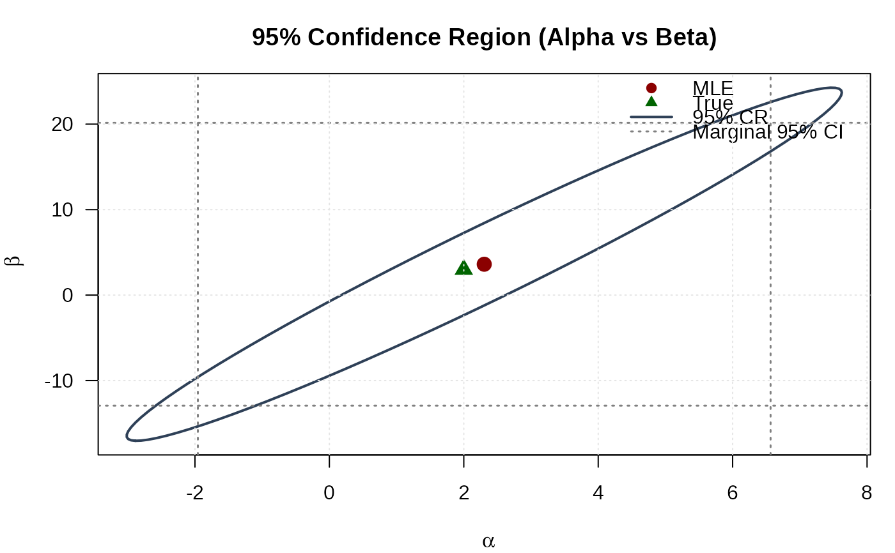

Computes the gradient vector (vector of first partial derivatives) of the
negative log-likelihood function for the Kumaraswamy-Kumaraswamy (kkw)
distribution with parameters alpha (\(\alpha\)), beta
(\(\beta\)), delta (\(\delta\)), and lambda (\(\lambda\)).
This distribution is the special case of the Generalized Kumaraswamy (GKw)
distribution where \(\gamma = 1\). The gradient is typically used in
optimization algorithms for maximum likelihood estimation.
Value
Returns a numeric vector of length 4 containing the partial derivatives
of the negative log-likelihood function \(-\ell(\theta | \mathbf{x})\) with
respect to each parameter:
\((-\partial \ell/\partial \alpha, -\partial \ell/\partial \beta, -\partial \ell/\partial \delta, -\partial \ell/\partial \lambda)\).
Returns a vector of NaN if any parameter values are invalid according
to their constraints, or if any value in data is not in the
interval (0, 1).
Details
The components of the gradient vector of the negative log-likelihood (\(-\nabla \ell(\theta | \mathbf{x})\)) for the kkw (\(\gamma=1\)) model are:
$$ -\frac{\partial \ell}{\partial \alpha} = -\frac{n}{\alpha} - \sum_{i=1}^{n}\ln(x_i) + (\beta-1)\sum_{i=1}^{n}\frac{x_i^{\alpha}\ln(x_i)}{v_i} - (\lambda-1)\sum_{i=1}^{n}\frac{\beta v_i^{\beta-1} x_i^{\alpha}\ln(x_i)}{w_i} + \delta\sum_{i=1}^{n}\frac{\lambda w_i^{\lambda-1} \beta v_i^{\beta-1} x_i^{\alpha}\ln(x_i)}{z_i} $$ $$ -\frac{\partial \ell}{\partial \beta} = -\frac{n}{\beta} - \sum_{i=1}^{n}\ln(v_i) + (\lambda-1)\sum_{i=1}^{n}\frac{v_i^{\beta}\ln(v_i)}{w_i} - \delta\sum_{i=1}^{n}\frac{\lambda w_i^{\lambda-1} v_i^{\beta}\ln(v_i)}{z_i} $$ $$ -\frac{\partial \ell}{\partial \delta} = -\frac{n}{\delta+1} - \sum_{i=1}^{n}\ln(z_i) $$ $$ -\frac{\partial \ell}{\partial \lambda} = -\frac{n}{\lambda} - \sum_{i=1}^{n}\ln(w_i) + \delta\sum_{i=1}^{n}\frac{w_i^{\lambda}\ln(w_i)}{z_i} $$
where:
\(v_i = 1 - x_i^{\alpha}\)
\(w_i = 1 - v_i^{\beta} = 1 - (1-x_i^{\alpha})^{\beta}\)
\(z_i = 1 - w_i^{\lambda} = 1 - [1-(1-x_i^{\alpha})^{\beta}]^{\lambda}\)
These formulas represent the derivatives of \(-\ell(\theta)\), consistent with
minimizing the negative log-likelihood. They correspond to the general GKw
gradient (grgkw) components for \(\alpha, \beta, \delta, \lambda\)
evaluated at \(\gamma=1\). Note that the component for \(\gamma\) is omitted.
Numerical stability is maintained through careful implementation.
References
Cordeiro, G. M., & de Castro, M. (2011). A new family of generalized distributions. Journal of Statistical Computation and Simulation,
Kumaraswamy, P. (1980). A generalized probability density function for double-bounded random processes. Journal of Hydrology, 46(1-2), 79-88.
Examples
# \donttest{
## Example 1: Basic Gradient Evaluation
# Generate sample data
set.seed(123)
n <- 1000
true_params <- c(alpha = 2.0, beta = 3.0, delta = 1.5, lambda = 2.0)
data <- rkkw(n, alpha = true_params[1], beta = true_params[2],
delta = true_params[3], lambda = true_params[4])
# Evaluate gradient at true parameters
grad_true <- grkkw(par = true_params, data = data)
cat("Gradient at true parameters:\n")
#> Gradient at true parameters:
print(grad_true)
#> [1] 11.766117 -6.438008 -5.538257 5.937580
cat("Norm:", sqrt(sum(grad_true^2)), "\n")
#> Norm: 15.67854
# Evaluate at different parameter values
test_params <- rbind(
c(1.5, 2.5, 1.0, 1.5),
c(2.0, 3.0, 1.5, 2.0),
c(2.5, 3.5, 2.0, 2.5)
)
grad_norms <- apply(test_params, 1, function(p) {
g <- grkkw(p, data)
sqrt(sum(g^2))
})
results <- data.frame(
Alpha = test_params[, 1],
Beta = test_params[, 2],
Delta = test_params[, 3],
Lambda = test_params[, 4],
Grad_Norm = grad_norms
)
print(results, digits = 4)
#> Alpha Beta Delta Lambda Grad_Norm
#> 1 1.5 2.5 1.0 1.5 910.71
#> 2 2.0 3.0 1.5 2.0 15.68
#> 3 2.5 3.5 2.0 2.5 896.28
## Example 2: Gradient in Optimization
# Optimization with analytical gradient
fit_with_grad <- optim(
par = c(1.5, 2.5, 1.0, 1.5),
fn = llkkw,
gr = grkkw,
data = data,
method = "BFGS",
hessian = TRUE,
control = list(trace = 0)
)
# Optimization without gradient
fit_no_grad <- optim(
par = c(1.5, 2.5, 1.0, 1.5),
fn = llkkw,
data = data,
method = "BFGS",
hessian = TRUE,
control = list(trace = 0)
)
comparison <- data.frame(
Method = c("With Gradient", "Without Gradient"),
Alpha = c(fit_with_grad$par[1], fit_no_grad$par[1]),
Beta = c(fit_with_grad$par[2], fit_no_grad$par[2]),
Delta = c(fit_with_grad$par[3], fit_no_grad$par[3]),
Lambda = c(fit_with_grad$par[4], fit_no_grad$par[4]),
NegLogLik = c(fit_with_grad$value, fit_no_grad$value),
Iterations = c(fit_with_grad$counts[1], fit_no_grad$counts[1])
)
print(comparison, digits = 4, row.names = FALSE)
#> Method Alpha Beta Delta Lambda NegLogLik Iterations
#> With Gradient 2.304 3.610 1.2222 1.705 -586.5 113
#> Without Gradient 2.495 4.544 0.8006 1.570 -586.5 213
## Example 3: Verifying Gradient at MLE
mle <- fit_with_grad$par
names(mle) <- c("alpha", "beta", "delta", "lambda")
# At MLE, gradient should be approximately zero
gradient_at_mle <- grkkw(par = mle, data = data)
cat("\nGradient at MLE:\n")
#>
#> Gradient at MLE:
print(gradient_at_mle)
#> [1] 0.05693999 -0.03217987 -0.03422936 0.04666259
cat("Max absolute component:", max(abs(gradient_at_mle)), "\n")
#> Max absolute component: 0.05693999
cat("Gradient norm:", sqrt(sum(gradient_at_mle^2)), "\n")
#> Gradient norm: 0.08733128
## Example 4: Numerical vs Analytical Gradient
# Manual finite difference gradient
numerical_gradient <- function(f, x, data, h = 1e-7) {
grad <- numeric(length(x))
for (i in seq_along(x)) {
x_plus <- x_minus <- x
x_plus[i] <- x[i] + h
x_minus[i] <- x[i] - h
grad[i] <- (f(x_plus, data) - f(x_minus, data)) / (2 * h)
}
return(grad)
}
# Compare at MLE
grad_analytical <- grkkw(par = mle, data = data)
grad_numerical <- numerical_gradient(llkkw, mle, data)
comparison_grad <- data.frame(
Parameter = c("alpha", "beta", "delta", "lambda"),
Analytical = grad_analytical,
Numerical = grad_numerical,
Abs_Diff = abs(grad_analytical - grad_numerical),
Rel_Error = abs(grad_analytical - grad_numerical) /
(abs(grad_analytical) + 1e-10)
)
print(comparison_grad, digits = 8)
#> Parameter Analytical Numerical Abs_Diff Rel_Error
#> 1 alpha 0.056939988 0.056946874 6.8854030e-06 1.2092386e-04
#> 2 beta -0.032179868 -0.032188154 8.2867859e-06 2.5751461e-04
#> 3 delta -0.034229365 -0.034231107 1.7418460e-06 5.0887477e-05
#> 4 lambda 0.046662594 0.046659352 3.2420501e-06 6.9478566e-05
## Example 5: Score Test Statistic
# Score test for H0: theta = theta0
theta0 <- c(1.8, 2.8, 1.3, 1.8)
score_theta0 <- -grkkw(par = theta0, data = data)
# Fisher information at theta0
fisher_info <- hskkw(par = theta0, data = data)
# Score test statistic
score_stat <- t(score_theta0) %*% solve(fisher_info) %*% score_theta0
p_value <- pchisq(score_stat, df = 4, lower.tail = FALSE)
cat("\nScore Test:\n")
#>
#> Score Test:
cat("H0: alpha=1.8, beta=2.8, delta=1.3, lambda=1.8\n")
#> H0: alpha=1.8, beta=2.8, delta=1.3, lambda=1.8
cat("Test statistic:", score_stat, "\n")
#> Test statistic: 65.77351
cat("P-value:", format.pval(p_value, digits = 4), "\n")
#> P-value: 1.768e-13
## Example 6: Confidence Ellipse with Gradient Information
# For visualization, use first two parameters (alpha, beta)
# Observed information
obs_info <- hskkw(par = mle, data = data)
vcov_full <- solve(obs_info)
vcov_2d <- vcov_full[1:2, 1:2]
# Create confidence ellipse
theta <- seq(0, 2 * pi, length.out = 100)
chi2_val <- qchisq(0.95, df = 2)
eig_decomp <- eigen(vcov_2d)
ellipse <- matrix(NA, nrow = 100, ncol = 2)
for (i in 1:100) {
v <- c(cos(theta[i]), sin(theta[i]))
ellipse[i, ] <- mle[1:2] + sqrt(chi2_val) *
(eig_decomp$vectors %*% diag(sqrt(eig_decomp$values)) %*% v)
}
# Marginal confidence intervals
se_2d <- sqrt(diag(vcov_2d))
ci_alpha <- mle[1] + c(-1, 1) * 1.96 * se_2d[1]
ci_beta <- mle[2] + c(-1, 1) * 1.96 * se_2d[2]
# Plot
par(mar = c(4, 4, 3, 1))
plot(ellipse[, 1], ellipse[, 2], type = "l", lwd = 2, col = "#2E4057",
xlab = expression(alpha), ylab = expression(beta),
main = "95% Confidence Region (Alpha vs Beta)", las = 1)
# Add marginal CIs
abline(v = ci_alpha, col = "#808080", lty = 3, lwd = 1.5)
abline(h = ci_beta, col = "#808080", lty = 3, lwd = 1.5)
points(mle[1], mle[2], pch = 19, col = "#8B0000", cex = 1.5)
points(true_params[1], true_params[2], pch = 17, col = "#006400", cex = 1.5)
legend("topright",
legend = c("MLE", "True", "95% CR", "Marginal 95% CI"),
col = c("#8B0000", "#006400", "#2E4057", "#808080"),
pch = c(19, 17, NA, NA),
lty = c(NA, NA, 1, 3),
lwd = c(NA, NA, 2, 1.5),
bty = "n")
grid(col = "gray90")

# }